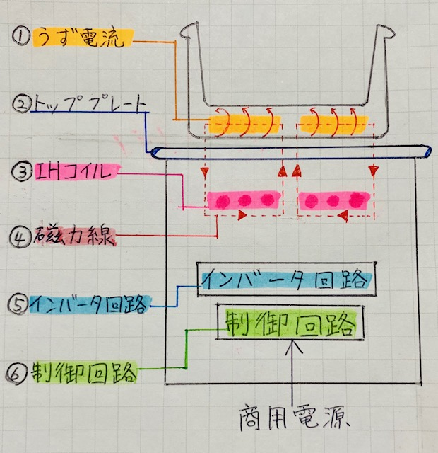

IH技術は、コンロや炊飯ジャーなどの、主に調理器に用いられている、加熱するための技術である。現在、この技術が使われた製品は広く普及しており、 多くの家庭で使われているため、我々にとって非常に身近なものになった。しかし、IH製品は知っていてもIH技術に関してはほとんど知らない、という人は、 多数いるのではないだろうか。私自身も日常的にIH製品を使用しているが、その仕組み等に関しては理解していない部分が多くあった。 そのため、ここではIH製品をより深く理解するために、IH技術の原理や仕組み、そのメリット、導入例について記す。
初めに、「IH」とは、Induction Heating（インダクションヒーティング）の略であり、日本語では「電磁誘導加熱」という。漢字から読み取れる通り、
一言で簡単に説明すると「電気で磁場を誘導することで加熱する」となる。
次に、IHクッキングヒーターを例に挙げ、その構造を用いてより詳しく説明する。構造を手書きしたものの写真を下に貼り付けておく。

IHクッキングヒーターの構造は、上図のように ➁トッププレート の鍋を置く位置の真下に、➂IHコイル※1 が設置されている。
www.suzuki-kogyo.net/ih/tecinfo01.html このをIHコイルに25kHzほどの高周波電流※2を流すと、IHコイルを取り巻くように ➁磁力線 が発生する。
また、この磁力線が鍋底の内部を通過することにより、、そこに ➀うず電流 が発生する（この現象を電磁誘導という）。
金属には電気抵抗があるため、鍋底はうず電流が流れることでジュール熱が発生し、加熱される（この現象を誘導加熱という）。
よって、銅やアルミニウムなどの電気抵抗が小さい金属製の鍋は、IHには不向きである。※3
IHの最大の特徴は、誘導加熱により磁性体のみを加熱することが可能なことであり、磁性体でないトッププレートなどは加熱されない.
そのため、IH調理器に最も適した金属は、磁石に付く鉄である。ステンレス製のものでも、磁石に付くのであれば使用できる。
最後に、温度センサーの説明をする。温度センサーとは、トッププレートを通して鍋の温度を検出するセンサーのことである。
一般的に、IHクッキングヒーターでは、コイルの中央や、コイルとコイルの間にサーミスター※4が設置されている。
搭載されている機能を使用する際に、鍋が設定温度に従って加熱されているかを調べる役割を担っている。
鍋底の温度を直接検知できる赤外線センサーが合わせて設置されている機種では、余熱時の温度管理や食品を投入した際の温度変化にT対応した
出力の調整を微細に管理することが可能になる。また、規定値以上の温度を検知した際には、自動的に通電を停止し、温度過昇や空焚きを防止する。
※1 IHコイルは、直径0.3～0.5mm程度の銅線24～50本をより合わせたもの（リッツ銅線※4 という）を渦巻き状にしたものである。
火力は、IHコイルに流す電流の大きさによって調節する。
鍋の加熱の斑を防ぐためにコイルを2、3分割し、温度の斑を軽減させたものもある。
※2 ➅制御回路 により商用電源を一度整流化し、直流パルス電力に変化させる。
それを ➄インバータ回路 により20k~30kHzの高周波電流に変換している。
※3 オールメタル対応IHでは、銅やアルミニウム製の鍋であっても使用可能である。
※4 サーミスターとは、僅かな温度の変化によって電気抵抗が大幅に変わるという、半導体の性質を利用した素子のことである。
温度測定や電力測定、自動制御回路などに用いられる。
※5 高周波電流には、高い周波数になると導体の中心ではほぼ流れず、表面付近を流れるという性質（表面効果という）がある.
IHコイルには大きな電流を流す必要があるが、太い電線1本では表面効果で流せる電流が限られてしまうため、
細い電線を数十本束にしたリッツ線が使われている。